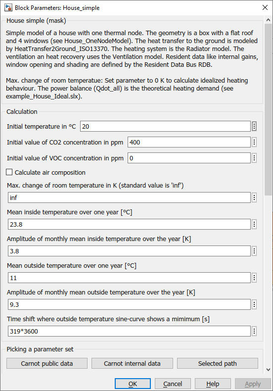
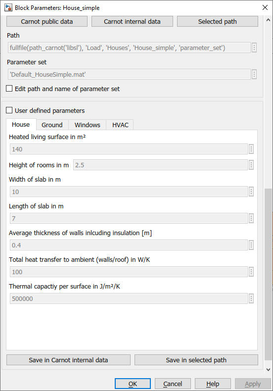
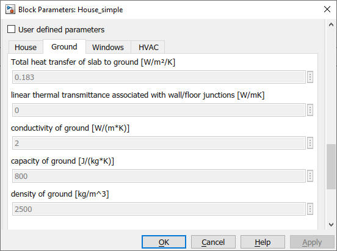
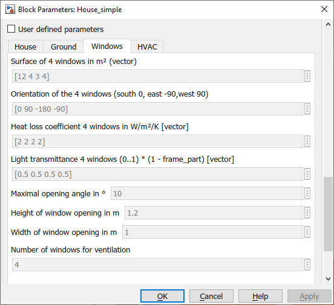
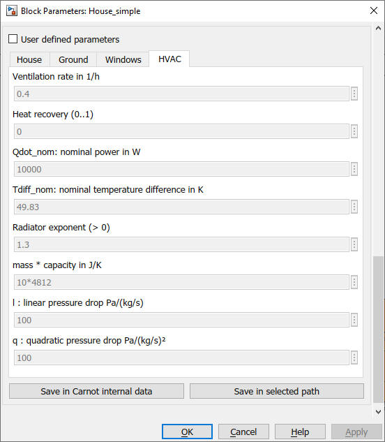

House_simple
Path: CARNOT/Loads/Houses
Purpose:
Simple one node / one zone model of a house with an integrated heating
system.
Description:
House_simple uses the model
House_OneNodeModel
for the building physics. The heating system uses the
Radiator model.
A neighbour building may be modelled by using the same block or just as
a constant temperature zone. An external ventilation system may supply
air to the building. The exhaust air of the ventilation system is
avaibale as THBvent_out.
The air exchange through gaps and mechanical ventilation with or without
heat recovery is is calculated by the
Ventilation block. Air exchange by windows
is calculated by the
Window_Ventilation model.
Opening and closing of windows is defined by the the
Resident Data Bus. Use
Resident_Data or
Redident_Task44 blocks.
A simplified concentration model RoomAirComposition is integrated in
House_simple. Activate the calculation of CO2 and VOC concentrations
with the check box "Calculate air composition". In this model also
the humidity is damped by a transfer function. But this does NOT
replace a humidity model of the walls and other surfaces in the room.
Detailed descriptions of building simulation models have been presented by Ochs: BES Simulation, 2022 and Ochs: Überblick der Aktivitäten an der UIBK, 2013 at the Carnot User Meetings.
Input:
| WDB | : | weather data bus |
| THB | : | Thermo-Hydraulic Bus of the flow line to the heating system |
| RDB | : | Resident Data Bus with internal gains, ventilation and shading control |
| THBfreshAir | : | Thermo-Hydraulic Bus of an external ventilation system to supply air to the house |
Output:
| Hdat | : | House Data Bus with information on the temperatures and energy flows (see below) |
| THBout | : | Thermo-Hydraulic Bus of the return line of the heating system |
| THBvent_out | : | Thermo-Hydraulic Bus of the exhaust air to the external ventilation system |
Definition of the House Data Bus Hdat :
| Troom : | : | room temperature in °C |
| Qdot | : | Bus with information of the thermal model, see definition of Qdot_all in House_OneNodeModel |
| RDB | : | Resident Data Bus with internal gains, ventilation and shading control |
| THB_in | : | Thermo-Hydraulic Bus of the low line to the heating system |
| THBout | : | Thermo-Hydraulic Bus of the return line of the heating system |
| Ahabit | : | living surface of the house in m2 |
| THBvent_out | : | Thermo-Hydraulic Bus of the exhaust air to the external ventilation system |
Remark :
Qdot_h is not the heating or cooling power delivered by the HVAC
system. Use an EnergyMeter_HC and
connect it to THB input / THBout output to get the correct balance
of heating and cooling energy delivered by the HVAC.
Parameters and Dialog Box:





Parameter sets can be loaded from a configuration file or can be edited by the user. See Basic Concepts - 6.2 Parameters and Dialog Box of the Model.
Examples:
Open the example explorer from the Matlab command window
ExampleBrowser
or load the examples via the CARNOT library.
Verifcation and Validation
See [Peter, Wintler, Dott 2014] and verfiy_HouseSimple.m in the verification folder of the model.
Literature:
Andreas Peter, Christian Winteler, Ralf Dott :
Implementation of
the IEA SHC & HPP T44/A38 Boundary Conditions in Matlab/Simulink with
CARNOT-blockset A Platform Independence Check for the IEA SHC Task 44 / HPP
Annex 38 – Subtask C, Institut Energie am Bau - Fachhochschule Nordwestschweiz,
2014
Michel Y. Haller, Ralf Dott, Jörn Ruschenburg, Fabian Ochs, Jacques Bony: The Reference Framework for System Simulations of the IEA SHC Task 44 / HPP Annex 38 Part A: General Simulation Boundary Conditions A technical report of subtask C Report C1 Part A, 2013
Ralf Dott, Michel Y. Haller, Jörn Ruschenburg, Fabian Ochs, Jacques Bony : The Reference Framework for System Simulations of the IEA SHC Task 44 / HPP Annex 38 Part B: Buildings and Space Heat Load A technical report of subtask C Report C1 Part B, 2013
Ochs, Breuss, Jenewein, Magni, Venturi: BES Performance Matlab vs. Simulink,
Carnot User Meeting, Innsbruck, 2022
also available on
https://fh-aachen.sciebo.de/index.php/s/0hxub0iIJrui3ED?path=%2FNutzertreffen%2F2022_Innsbruck
Fabian Ochs: Überblick der Aktivitäten an der UIBK, Carnot User Meeting, Basel/Muttenz, 2013
also available on
https://fh-aachen.sciebo.de/index.php/s/0hxub0iIJrui3ED?path=%2FNutzertreffen%2F2013_Basel
Characteristics:
| Direct Feedthrough | : | Yes |
| Sample Time | : | Inherited from driving block |
| Vectorized | : | No |